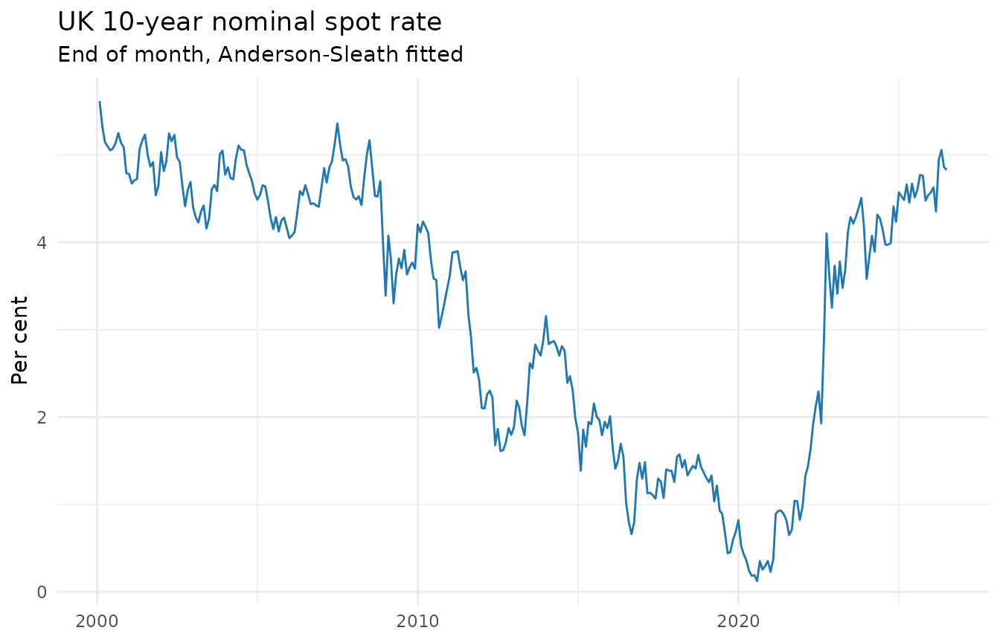
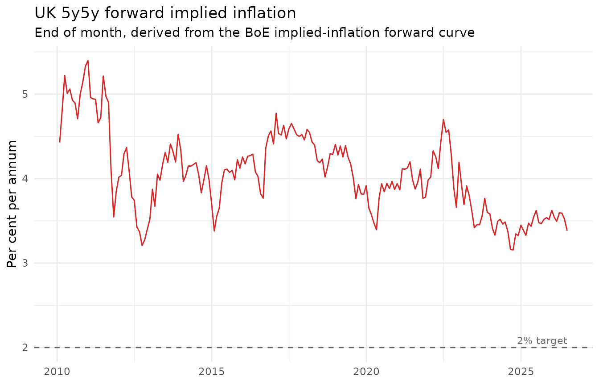
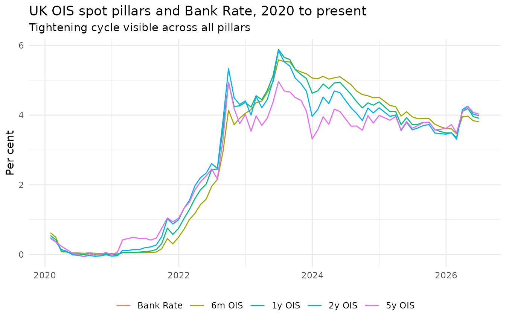
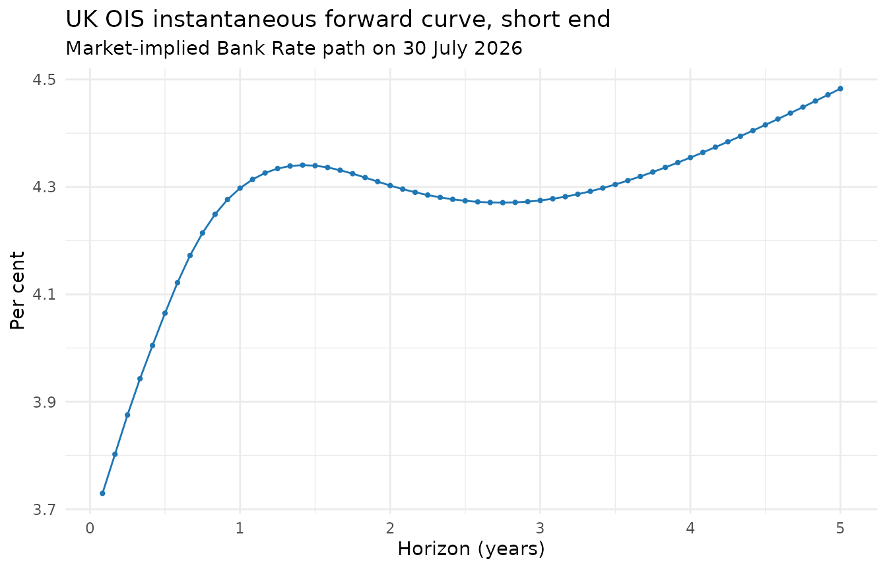

Anderson-Sleath yield curves: latest and historical
Charles Coverdale
02 August 2026
Source:vignettes/yield-curves.Rmd
yield-curves.RmdThe Bank of England publishes daily fitted yield curves at all
maturities using the Anderson and Sleath (2001) smoothing methodology.
Five curves are produced: nominal gilt, real (index-linked) gilt,
implied inflation, overnight index swap (OIS), and the commercial bank
liability curve (BLC). Each is available in spot and
instantaneous-forward form, and in two segments: the standard
curve (half-year maturity steps out to 25 or 40 years) and the
separately fitted short end (monthly steps from one month to
five years), selected with segment = "short".
The default behaviour of boe_curve() returns the latest
published month, matching what most analysts need when they reach for
“today’s curve”. Pass from, to, or
frequency = "monthly" and the function switches to the BoE
historical archive, which extends back as far as 1979 for nominal
gilts.
Latest published month
latest <- boe_curve(curve = "nominal", measure = "spot")
#> ℹ Downloading yield curve archive from Bank of England
#> ✔ Downloading yield curve archive from Bank of England [134ms]
#>
range(latest$date)
#> [1] "2026-07-01" "2026-07-30"
range(latest$maturity_years)
#> [1] 0.5 40.0boe_curve() returns a long-format boe_tbl
with one row per (date, maturity) pair. Provenance is attached as an
attribute:
Historical: 10-year nominal spot rate since 2000
For time-series work, boe_curve_panel() reshapes the
long format into a wide panel with one column per pillar maturity.
End-of-month frequency is plenty for multi-decade work and keeps the
download small.
panel <- boe_curve_panel(
curve = "nominal",
measure = "spot",
frequency = "monthly",
from = "2000-01-01",
maturities = c(2, 5, 10, 20)
)
#> ℹ Downloading nominal monthly yield-curve archive from Bank of England
#> ✔ Downloading nominal monthly yield-curve archive from Bank of England [269ms]
#>
head(panel)
#> # BoE [boe_curve_panel]: 1 series [AS_NOMINAL_SPOT] · 6 obs · 2000-01-31 to 2026-06-30 · freq=monthly
#> date m2 m5 m10 m20
#> 1 2000-01-31 6.474909 6.286147 5.613887 4.478985
#> 2 2000-02-29 6.302563 6.010255 5.334982 4.363222
#> 3 2000-03-31 6.273430 5.857503 5.147789 4.349529
#> 4 2000-04-30 6.069206 5.704744 5.097727 4.262276
#> 5 2000-05-31 6.136496 5.695847 5.051332 4.304463
#> 6 2000-06-30 5.942865 5.594983 5.073053 4.379719
if (requireNamespace("ggplot2", quietly = TRUE)) {
ggplot2::ggplot(panel, ggplot2::aes(date, m10)) +
ggplot2::geom_line(colour = "#1f77b4") +
ggplot2::labs(
title = "UK 10-year nominal spot rate",
subtitle = "End of month, Anderson-Sleath fitted",
x = NULL, y = "Per cent"
) +
ggplot2::theme_minimal()
}
5y5y forward implied inflation
The 5y5y forward inflation rate (the average implied inflation rate over the second five-year horizon, five years from now) is a textbook medium-term inflation expectations measure. It comes straight off the implied-inflation forward curve.
inflation_fwd <- boe_curve_panel(
curve = "inflation",
measure = "forward",
frequency = "monthly",
from = "2010-01-01",
maturities = c(5, 10)
)
#> ℹ Downloading inflation monthly yield-curve archive from Bank of England
#> ✔ Downloading inflation monthly yield-curve archive from Bank of England [228ms]
#>
inflation_fwd$five_y_five_y <- (inflation_fwd$m10 * 10 -
inflation_fwd$m5 * 5) / 5
head(inflation_fwd[, c("date", "m5", "m10", "five_y_five_y")])
#> # BoE: 6 obs
#> date m5 m10 five_y_five_y
#> 1 2010-01-31 3.299640 3.863640 4.427640
#> 2 2010-02-28 3.401710 4.095848 4.789986
#> 3 2010-03-31 3.415668 4.318069 5.220470
#> 4 2010-04-30 3.458722 4.233360 5.007998
#> 5 2010-05-31 2.957608 4.008686 5.059764
#> 6 2010-06-30 2.779321 3.854157 4.928993
if (requireNamespace("ggplot2", quietly = TRUE)) {
ggplot2::ggplot(inflation_fwd, ggplot2::aes(date, five_y_five_y)) +
ggplot2::geom_line(colour = "#d62728") +
ggplot2::geom_hline(yintercept = 2.0, linetype = "dashed",
colour = "grey40") +
ggplot2::annotate("text", x = max(inflation_fwd$date),
y = 2.0, label = "2% target", hjust = 1, vjust = -0.5,
colour = "grey40", size = 3) +
ggplot2::labs(
title = "UK 5y5y forward implied inflation",
subtitle = "End of month, derived from the BoE implied-inflation forward curve",
x = NULL, y = "Per cent per annum"
) +
ggplot2::theme_minimal()
}
OIS curve evolution across the rate cycle
The OIS curve gives a market-implied path for Bank Rate. Comparing OIS spot pillars at MPC decision dates shows how expectations shifted through the 2022 to 2024 hiking cycle.
ois <- boe_curve_panel(
curve = "ois",
measure = "spot",
frequency = "monthly",
from = "2020-01-01",
maturities = c(0.5, 1, 2, 5)
)
#> ℹ Downloading ois monthly yield-curve archive from Bank of England
#> ✔ Downloading ois monthly yield-curve archive from Bank of England [282ms]
#>
mpc <- boe_mpc_decisions(from = "2020-01-01")
#> ℹ Downloading from Bank of England
#> ✔ Downloading from Bank of England [419ms]
#>
mpc <- data.frame(date = mpc$date, bank_rate = mpc$new_rate_pct)
merged <- merge(ois, mpc, by = "date", all.x = TRUE)
merged$bank_rate <- as.numeric(merged$bank_rate)
# carry the bank rate forward between MPC dates
for (i in seq_along(merged$bank_rate)) {
if (i > 1 && is.na(merged$bank_rate[i])) {
merged$bank_rate[i] <- merged$bank_rate[i - 1]
}
}
tail(merged)
#> date m0.5 m1 m2 m5 bank_rate
#> 72 2026-01-30 3.603969 3.491676 3.492607 3.727255 NA
#> 73 2026-02-27 3.461611 3.348672 3.309542 3.485201 NA
#> 74 2026-03-31 3.950747 4.102948 4.162256 4.106304 NA
#> 75 2026-04-30 3.968888 4.190262 4.258125 4.245096 NA
#> 76 2026-05-29 3.837568 3.955861 4.024661 4.078898 NA
#> 77 2026-06-30 3.810490 3.909603 3.983603 4.027876 NA
if (requireNamespace("ggplot2", quietly = TRUE)) {
long <- data.frame(
date = rep(merged$date, 5),
pillar = rep(c("Bank Rate", "6m OIS", "1y OIS", "2y OIS", "5y OIS"),
each = nrow(merged)),
rate = c(merged$bank_rate, merged$m0.5, merged$m1, merged$m2, merged$m5)
)
long$pillar <- factor(long$pillar,
levels = c("Bank Rate", "6m OIS", "1y OIS",
"2y OIS", "5y OIS"))
ggplot2::ggplot(long, ggplot2::aes(date, rate, colour = pillar)) +
ggplot2::geom_line() +
ggplot2::labs(
title = "UK OIS spot pillars and Bank Rate, 2020 to present",
subtitle = "Tightening cycle visible across all pillars",
x = NULL, y = "Per cent", colour = NULL
) +
ggplot2::theme_minimal() +
ggplot2::theme(legend.position = "bottom")
}
#> Warning: Removed 77 rows containing missing values or values outside the scale range
#> (`geom_line()`).
The short end of the curve
The standard curves step in half-years from 0.5 years out. For
near-term policy and money-market work the Bank fits a separate
short end at monthly maturities, from one month to five years.
Pass segment = "short" to boe_curve() or
boe_curve_panel() to reach it.
short <- boe_curve(curve = "nominal", measure = "spot", segment = "short")
#> ℹ Using cached yield curve archive
#> ✔ Using cached yield curve archive [7ms]
#>
range(short$maturity_years) # monthly grid, ~1/12 to 5 years
#> [1] 0.25 5.00The short end of the OIS forward curve is the cleanest market-implied path for Bank Rate: the instantaneous forward rate at each horizon, at monthly resolution. Here it is on the most recent published date.
ois_short <- boe_curve(curve = "ois", measure = "forward", segment = "short")
#> ℹ Using cached yield curve archive
#> ✔ Using cached yield curve archive [11ms]
#>
latest_day <- ois_short[ois_short$date == max(ois_short$date), ]
head(latest_day)
#> # BoE [boe_curve]: 1 series [AS_OIS_FORWARD_SHORT] · 6 obs · 2026-07-01 to 2026-07-30 · freq=daily
#> date maturity_years rate_pct
#> 1261 2026-07-30 0.08333333 3.729472
#> 1262 2026-07-30 0.16666667 3.802332
#> 1263 2026-07-30 0.25000000 3.875372
#> 1264 2026-07-30 0.33333333 3.942997
#> 1265 2026-07-30 0.41666667 4.004793
#> 1266 2026-07-30 0.50000000 4.064993
if (requireNamespace("ggplot2", quietly = TRUE)) {
ggplot2::ggplot(latest_day, ggplot2::aes(maturity_years, rate_pct)) +
ggplot2::geom_line(colour = "#1f77b4") +
ggplot2::geom_point(size = 0.8, colour = "#1f77b4") +
ggplot2::labs(
title = "UK OIS instantaneous forward curve, short end",
subtitle = paste("Market-implied Bank Rate path on",
format(max(ois_short$date), "%d %B %Y")),
x = "Horizon (years)", y = "Per cent"
) +
ggplot2::theme_minimal()
}
Short-end history goes back as far as the Bank published it: to 1979 for nominal gilts, and from 2016 for OIS. Where a period has no short-end sheet (early OIS, for instance), those dates are simply absent from the result rather than causing an error.
When to reach for the archive
| Question | Argument set |
|---|---|
| Today’s curve | none (default) |
| Last few years, daily | from = "2020-01-01" |
| Multi-decade panel for econometrics | frequency = "monthly", from = "1990-01-01" |
| Near-term policy-rate path, monthly detail | segment = "short" |
| Commercial bank liability curve |
curve = "blc" (always uses archive) |
Archive zips cache for 30 days by default; the latest-month zip
caches for 24 hours. Override with cache_ttl_h if you need
to force a fresh pull.
References
Anderson, N. and Sleath, J. (2001). New estimates of the UK real and nominal yield curves. Bank of England Working Paper No. 126. https://www.bankofengland.co.uk/working-paper/2001/new-estimates-of-the-uk-real-and-nominal-yield-curves